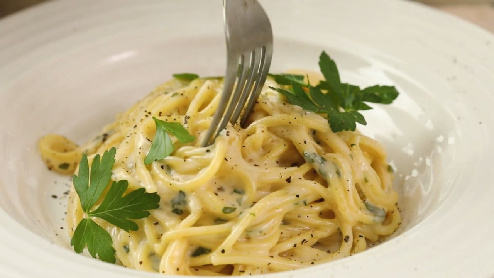

Garlic Pasta

Description
Creamy garlic pasta is a comforting and flavourful dish that combines al dente pasta with a rich and velvety garlic-infused cream sauce.
The pasta is cooked until tender and then tossed in a luscious sauce made from garlic, butter, cream, and Parmesan cheese. The garlic brings a bold and aromatic taste to the dish, while the cream adds a luxurious smoothness.
Ingredients
- 2 teaspoons olive oil
- 4 garlic cloves, minced
- 2 tablespoons butter
- 3 cups chicken broth, or more as needed
- ½ teaspoon ground black pepper
- ¼ teaspoon salt
- 250 grams spaghetti
- 1 cup grated Parmesan cheese
- ¾ cup heavy cream
- 1 ½ tablespoons dried parsley
Cooking Directions
- Heat olive oil in a medium pan over medium heat. Add garlic and stir until fragrant, 1 to 2 minutes. Add butter and stir constantly until melted. Pour in 3 cups chicken broth; add pepper and salt. Bring to a boil.
- Add spaghetti and cook, stirring occasionally, until tender yet firm to the bite, about 12 minutes. Add more chicken broth if pasta starts to stick to the pan.
- dd Parmesan cheese, cream, and parsley and mix until thoroughly combined. Serve immediately.